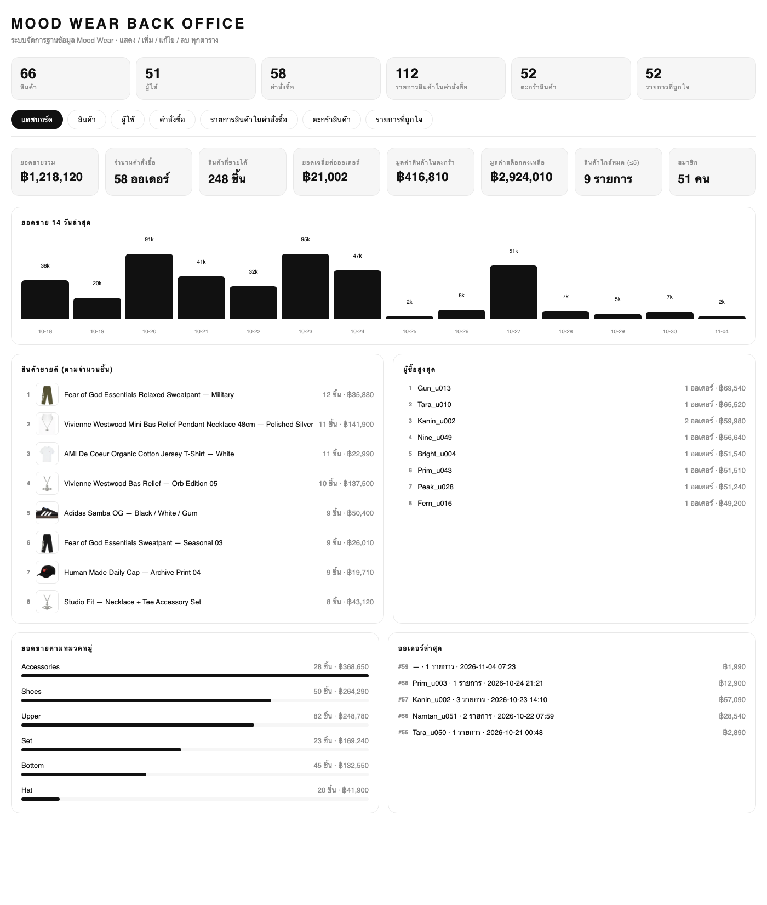
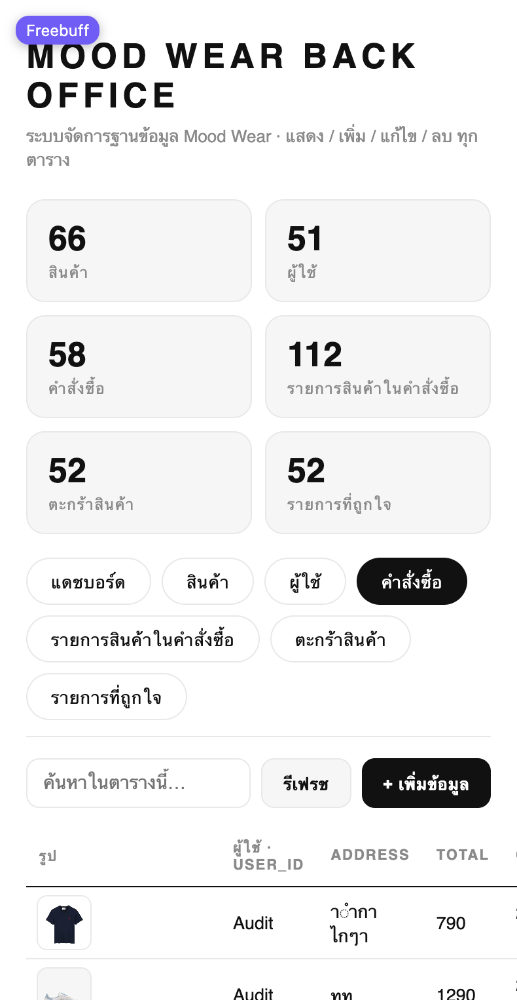
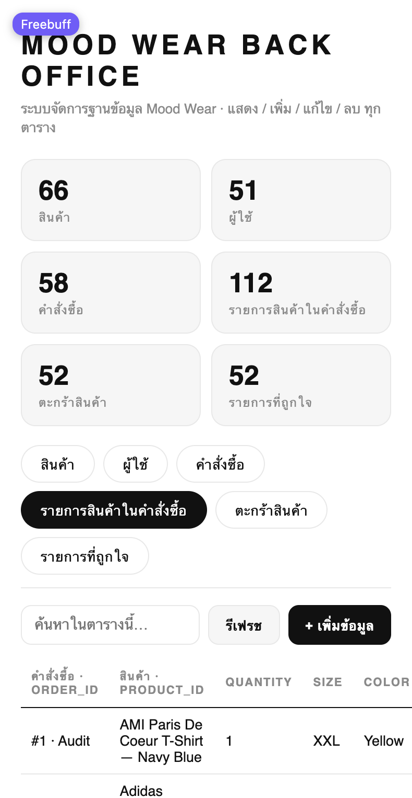
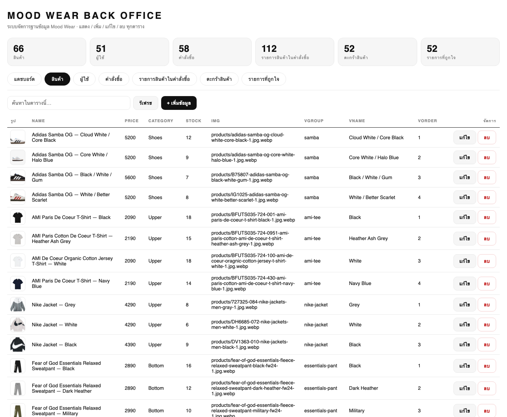
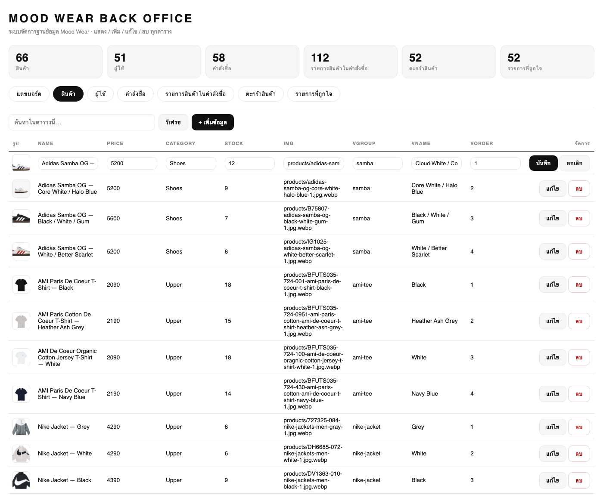
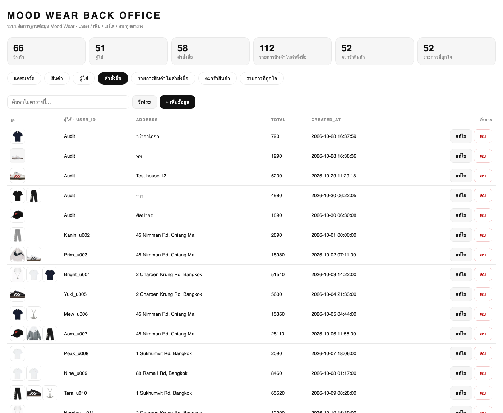
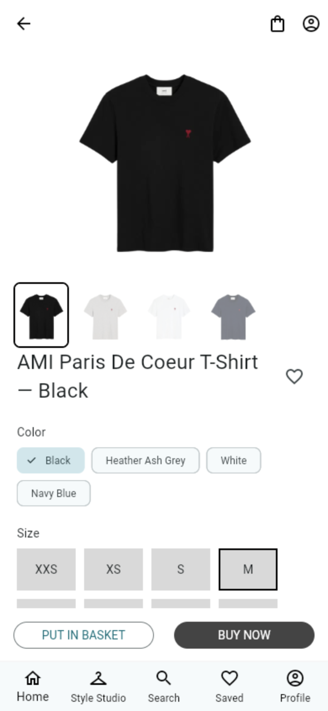

ระบบชื่อ “Mood Wear” เป็นระบบจัดการฐานข้อมูลร้านค้าเสื้อผ้าและสินค้าแฟชั่น ประกอบด้วย Web Application (Back Office) สำหรับทีมงานที่ทำการ แสดงรายการข้อมูล, ค้นหา, เพิ่ม (Insert), แก้ไข (Update) และลบ (Delete) ข้อมูลทุกตารางในฐานข้อมูล พร้อม แดชบอร์ดสรุปยอดขาย ที่คำนวณจากข้อมูลจริงในฐานข้อมูล และแอปพลิเคชันร้านค้าหน้าร้าน (Mobile / Web) ที่อ่านและเขียนข้อมูล ผ่าน REST API ชุดเดียวกันกับฐานข้อมูลเดียวกัน
ระบบ Mood Wear เกิดจากทีมงานประสงค์จะจำลองร้านค้าแฟชั่นจริง ที่มีทั้งหน้าร้านสำหรับผู้ซื้อและหลังบ้านสำหรับผู้ดูแล จึงออกแบบฐานข้อมูลที่ใช้ร่วมกันในทุกช่องทาง และเตรียมชุดข้อมูลตัวอย่างจากข้อมูลสินค้าแฟชั่นจริง โดยเครื่องมือที่ใช้คือการรวบรวม/ทำสำเนารายการสินค้าเอง (Self-collected / Web Scraping) เพื่อให้ระบบมีข้อมูลเชิงสาธิตที่ใกล้เคียงความจริง
ข้อมูลในระบบจัดเก็บไว้ครบทั้งหมด 6 ตาราง รวม 391 แถว (สินค้า 66 ชิ้น · ผู้ใช้ 51 คน · คำสั่งซื้อ 58 รายการ · รายการสินค้าในคำสั่งซื้อ 112 แถว · ตะกร้า 52 แถว · ถูกใจ 52 แถว) โดยมีความหลากหลายของข้อมูลทุกตารางตามเกณฑ์ของโครงงาน
แหล่งข้อมูลของระบบ:
– ข้อมูลสินค้า (products) รวมถึงรูปสินค้า รวบรวมเองจากรายการเว็บไซต์และรูปภาพสินค้าสาธารณะ (Self-collected / Web Scraping) ประกอบด้วยหลายหมวดหมู่ ได้แก่ Shoes, Upper, Bottom, Hat, Accessories, Set และมีความหลากหลายของราคา, สต็อก, ตัวเลือกสินค้า (variant)
– ข้อมูลผู้ใช้ (users) และการสั่งซื้อ (orders / order_items) ข้อมูลตัวอย่างที่ทีมงานสร้างขึ้นเพื่อการทดสอบระบบ (ความหลากหลาย: ชื่อ, อีเมล, เบอร์โทร, ที่อยู่, ยอดรวม, วันที่)
– ข้อมูลตะกร้า (cart_items) และรายการที่ถูกใจ (favorites) เป็นข้อมูลที่เกิดจากพฤติกรรมผู้ใช้ในแอป
จากการวิเคราะห์ระบบงานร้านเสื้อผ้าสามารถจำแนก Entity หลักได้ 5 Entity โดย Entity ทั้งหมดจะถูกแปลงเป็น 6 ตาราง (ORDER ITEM เป็น Entity เชื่อมแยกตารางต่างหาก)
โดยสินค้าในคำสั่งซื้อแต่ละรายการจะจำแนกเป็น order item ซึ่งเป็น Entity เชิงเส้นเชื่อม (associative entity) ที่แยกออกเป็นตารางเองเพื่อให้ 1 คำสั่งซื้อ มีสินค้าได้หลายรายการ
| Entity | Attribute | หมายเหตุ |
|---|---|---|
| USER | id, username, email, phone, password_hash | email ไม่ซ้ำกัน (unique) |
| PRODUCT | id, name, price, category, stock, img, vgroup, vname, vorder | vgroup/vname/vorder ใช้จัดกลุ่ม variant ของสินค้าเดียวกัน |
| ORDER | id, user_id, address, total, created_at | user_id เป็นเส้นเชื่อมไป USER |
| ORDER ITEM | id, order_id, product_id, quantity, size, color, unit_price | order_id → ORDER, product_id → PRODUCT |
| CART ITEM | id, user_id, product_id, quantity, size, color | user_id → USER, product_id → PRODUCT |
| FAVORITE | user_id, product_id, created_at | user_id → USER, product_id → PRODUCT |
| ตาราง | Primary Key | Foreign Key |
|---|---|---|
| users | id | — |
| products | id | — |
| orders | id | user_id → users.id |
| order_items | id | order_id → orders.id, product_id → products.id |
| cart_items | id | user_id → users.id, product_id → products.id (ผู้ใช้ 1 สินค้า 1 ขนาด 1 สี ซ้ำไม่ได้ — UNIQUE constraint) |
| favorites | (user_id, product_id) — composite key | user_id → users.id, product_id → products.id |
ความสัมพันธ์ที่ออกแบบมีทั้งหมด 6 แบบ (มากกว่าเกณฑ์ขั้นต่ำ 3 แบบ):
| # | ความสัมพันธ์ | ประเภท | ความหมาย |
|---|---|---|---|
| 1 | USER — ORDER | 1 : N | ผู้ใช้หนึ่งคนสั่งซื้อได้หลายคำสั่งซื้อ |
| 2 | ORDER — ORDER ITEM | 1 : N | คำสั่งซื้อหนึ่งครั้งมีสินค้าได้หลายรายการ |
| 3 | PRODUCT — ORDER ITEM | 1 : N | สินค้าหนึ่งชิ้นปรากฏได้ในหลายรายการของคำสั่งซื้อ |
| 4 | USER — CART ITEM | 1 : N | ผู้ใช้หนึ่งคนมีสินค้าในตะกร้าได้หลายชิ้น |
| 5 | PRODUCT — CART ITEM | 1 : N | สินค้าหนึ่งชิ้นถูกใส่ตะกร้าโดยผู้ใช้ได้หลายคน |
| 6 | USER — PRODUCT (ผ่าน FAVORITE) | M : N | ผู้ใช้หนึ่งคนถูกใจสินค้าได้หลายชิ้น และสินค้าชิ้นหนึ่งถูกใจโดยผู้ใช้ได้หลายคน |
ในการประมวลผลระบบปัจจุบัน M:N (ข้อ 6) ถูกแปลงเป็นตารางเชื่อม favorites ที่มี composite primary key (user_id, product_id)
และระบบเปิดการบังคับ Foreign Key PRAGMA foreign_keys = ON จึงมีการตรวจสอบความถูกต้องของ FK ตั้งแต่ระดับตาราง
ผลการแปลงให้ Relation Schema ต่อไปนี้ (ใต้เส้น = Primary Key, ตัวเอียง = Foreign Key):
| Users | ( id, username, email[unique], phone, password_hash ) |
| Products | ( id, name, price, category, stock, img, vgroup, vname, vorder ) |
| Orders | ( id, user_id → Users.id, address, total, created_at ) |
| Order_items | ( id, order_id → Orders.id, product_id → Products.id, quantity, size, color, unit_price ) |
| Cart_items | ( id, user_id → Users.id, product_id → Products.id, quantity, size, color , UNIQUE(user_id, product_id, size, color) ) |
| Favorites | ( user_id → Users.id, product_id → Products.id, created_at ) — keyed relation จาก M:N |
เหตุผลการแปลง: ความสัมพันธ์ 1 : N ทุกแบบถูกแปลงโดยการ “ติด” FK ไปไว้ที่ฝั่ง N; ความสัมพันธ์ M : N (USER–PRODUCT ผ่าน FAVORITE) ถูกแปลงเป็นตารางเชื่อมที่มี composite PK
| ฟอร์ม | การตรวจสอบ | ผลลัพธ์ |
|---|---|---|
| 1NF | ทุกตารางมีค่าแอตทริบิวต์เป็นค่าเดี่ยว (atomic value) ไม่มีข้อมูล list ซ้ำซ้อนในช่องเดียว และมี Primary Key ทุกตาราง | ผ่าน |
| 2NF | ไม่มี Partial Dependency เพราะตารางที่ใช้ composite key มีตารางเดียว (favorites: user_id, product_id เป็นส่วนหนึ่งของ key และไม่มี attribute ที่พึ่งพาเพียงส่วนเดียวของ key) | ผ่าน |
| 3NF | ไม่มี Transitive Dependency — ชื่อ/ราคาสินค้าไม่ถูกเก็บซ้ำในตารางอื่น ทุกตารางอ้างอิงด้วย id (ส่วน unit_price ใน order_items เป็น “ราคาขณะสั่งซื้อ” ซึ่งเป็นข้อกำหนดเชิงธุรกิจ ไม่ใช่ dependency ต่อราคาปัจจุบันของสินค้า) | ผ่าน |
เมื่อตรวจสอบรูปแบบข้อมูลตามหลัก Normalization พบว่าโครงสร้างตารางในระบบไม่มีการซ้ำซ้อนของข้อมูลที่ต้องพึ่งพากันข้ามตาราง — ทุกตารางเก็บเฉพาะข้อมูลของ Entity ตนเอง และอ้างถึงส่วนอื่นด้วยรหัส (id) เท่านั้น
หมายเหตุ: การที่ระบบแสดง “ชื่อผู้ใช้/ชื่อสินค้า” แทนรหัสในหน้า Back Office และในรายงานสรุป ไม่ได้ทำให้เกิดการเก็บข้อมูลซ้ำ เพราะทำผ่าน JOIN และ VIEW (อ่านอย่างเดียว) โดยตารางจริงยังคงอยู่ในรูป 3NF ตามที่ออกแบบไว้
| Field | Data Type | Size | PK / FK | Constraint | คำอธิบาย |
|---|---|---|---|---|---|
| id | INTEGER | — | PK | NOT NULL, auto-increment | รหัสผู้ใช้ |
| username | TEXT | 255 | — | NOT NULL | ชื่อผู้ใช้ |
| TEXT | 255 | — | UNIQUE | อีเมล (ไม่ซ้ำ) | |
| phone | TEXT | 32 | — | — | เบอร์โทรศัพท์ |
| password_hash | TEXT | 255 | — | — | รหัสผ่านแบบเข้ารหัส (ไม่เก็บ plain text) |
| Field | Data Type | Size | PK / FK | Constraint | คำอธิบาย |
|---|---|---|---|---|---|
| id | INTEGER | — | PK | NOT NULL, auto-increment | รหัสสินค้า |
| name | TEXT | 255 | — | NOT NULL | ชื่อสินค้า |
| price | INTEGER | — | — | NOT NULL | ราคา (บาท) |
| category | TEXT | 64 | — | NOT NULL | หมวดสินค้า (Shoes/Upper/Bottom/Hat/Accessories/Set) |
| stock | INTEGER | — | — | NOT NULL | จำนวนสินค้าคงเหลือ |
| img | TEXT | 255 | — | DEFAULT '' | path รูปสินค้า |
| vgroup | TEXT | 64 | — | DEFAULT '' | กลุ่ม variant (สินค้าที่มีรูปเดียวกัน) |
| vname | TEXT | 64 | — | DEFAULT '' | ชื่อ variant แสดงหน้าร้าน |
| vorder | INTEGER | — | — | DEFAULT 0 | ลำดับการเรียง variant |
| Field | Data Type | Size | PK / FK | Constraint | คำอธิบาย |
|---|---|---|---|---|---|
| id | INTEGER | — | PK | NOT NULL, auto-increment | รหัสคำสั่งซื้อ |
| user_id | INTEGER | — | FK → users.id | NOT NULL | ผู้สั่งซื้อ |
| address | TEXT | 255 | — | NOT NULL | ที่อยู่จัดส่ง |
| total | INTEGER | — | — | NOT NULL | ยอดเงินรวม (บาท) |
| created_at | TEXT | 32 | — | DEFAULT CURRENT_TIMESTAMP | วัน/เวลาที่สั่ง |
| Field | Data Type | Size | PK / FK | Constraint | คำอธิบาย |
|---|---|---|---|---|---|
| id | INTEGER | — | PK | NOT NULL, auto-increment | รหัสรายการ |
| order_id | INTEGER | — | FK → orders.id | NOT NULL | คำสั่งซื้อที่รายการนี้อยู่ |
| product_id | INTEGER | — | FK → products.id | NOT NULL | สินค้าที่สั่ง |
| quantity | INTEGER | — | — | NOT NULL | จำนวนชิ้น |
| size | TEXT | 16 | — | — | ไซส์ที่เลือก (รองเท้าเป็น US size) |
| color | TEXT | 64 | — | — | สีที่เลือก |
| unit_price | INTEGER | — | — | NOT NULL | ราคาต่อชิ้น ณ เวลาสั่งซื้อ |
| Field | Data Type | Size | PK / FK | Constraint | คำอธิบาย |
|---|---|---|---|---|---|
| id | INTEGER | — | PK | NOT NULL, auto-increment | รหัสแถว |
| user_id | INTEGER | — | FK → users.id | NOT NULL | เจ้าของตะกร้า |
| product_id | INTEGER | — | FK → products.id | NOT NULL | สินค้าในตะกร้า |
| quantity | INTEGER | — | — | DEFAULT 1 | จำนวนชิ้น |
| size | TEXT | 16 | — | DEFAULT 'M' | ไซส์ที่เลือก |
| color | TEXT | 64 | — | DEFAULT '' | สีที่เลือก |
| UNIQUE(user_id, product_id, size, color) — กันการใส่สินค้าเงื่อนไขเดียวกันซ้ำหลายแถว | |||||
| Field | Data Type | Size | PK / FK | Constraint | คำอธิบาย |
|---|---|---|---|---|---|
| user_id | INTEGER | — | PK (composite), FK → users.id | NOT NULL | ผู้ใช้ที่กดถูกใจ |
| product_id | INTEGER | — | PK (composite), FK → products.id | NOT NULL | สินค้าที่ถูกใจ |
| created_at | TEXT | 32 | — | DEFAULT CURRENT_TIMESTAMP | วัน/เวลาที่กดถูกใจ |
| ตาราง | จำนวนแถว (Rows) | เกณฑ์ ≥ 50 แถว |
|---|---|---|
| products | 66 | ผ่าน |
| users | 51 | ผ่าน |
| orders | 58 | ผ่าน |
| order_items | 112 | ผ่าน |
| cart_items | 52 | ผ่าน |
| favorites | 52 | ผ่าน |
ปัญหาที่พบในการใช้งานจริงคือตาราง orders, order_items, cart_items และ favorites
เก็บเฉพาะรหัสอ้างอิง (user_id / product_id) ทำให้อ่านข้อมูลดิบแล้วไม่รู้ว่า “ใครสั่ง” และ “สั่งอะไร”
ทีมงานจึงแก้ปัญหาด้วยการสร้าง VIEW 4 ตัวที่ JOIN กับตาราง users และ products เพื่อแสดงชื่อ โดยไม่แก้โครงสร้างตารางจริง
(รักษา Normalization 3NF ตามข้อ 6)
| View | ดึงข้อมูลจาก | คอลัมน์ที่ได้ |
|---|---|---|
| v_orders | orders ⨝ users | id, user_id, user_name, address, total, created_at |
| v_order_items | order_items ⨝ orders ⨝ users ⨝ products | id, order_id, user_name, product_id, product_name, quantity, size, color, unit_price |
| v_cart_items | cart_items ⨝ users ⨝ products | id, user_id, user_name, product_id, product_name, quantity, size, color |
| v_favorites | favorites ⨝ users ⨝ products | user_id, user_name, product_id, product_name, created_at |
CREATE VIEW v_order_items AS
SELECT oi.id, oi.order_id, u.username AS user_name,
oi.product_id, p.name AS product_name,
oi.quantity, oi.size, oi.color, oi.unit_price
FROM order_items oi
LEFT JOIN orders o ON o.id = oi.order_id
LEFT JOIN users u ON u.id = o.user_id
LEFT JOIN products p ON p.id = oi.product_id;
-- ใช้งาน
SELECT id, user_name, product_name, quantity, unit_price
FROM v_order_items ORDER BY id LIMIT 5;
ผลลัพธ์ที่ได้จะอ่านเข้าใจทันที เช่น #1 · Audit · AMI Paris De Coeur T-Shirt — Navy Blue · 1 ชิ้น · 790 บาท
view ทั้ง 4 ตัวถูกบันทึกไว้ในไฟล์ database_export_sqlite.sql และ database_export_mysql.sql เพื่อให้ผู้ตรวจนำไปใช้ได้ทันที
นอกเหนือจาก CRUD ตามเกณฑ์แล้ว ระบบมีหน้า Dashboard ที่คำนวณสรุปจากข้อมูลจริงในฐานข้อมูล (read-only) และแสดงรูปสินค้าในตาราง เพื่อให้ผู้ดูแลหลังบ้านอ่านข้อมูลได้ง่ายขึ้น โดยข้อมูลทุกแถวยังเป็นชุดเดิม ไม่มีการแก้ไขหรือลบข้อมูล
| ตัวชี้วัด | ค่า | แหล่งที่มา (SQL) |
|---|---|---|
| ยอดขายรวม | ฿1,218,120 | SUM(orders.total) |
| จำนวนคำสั่งซื้อ | 58 ออเดอร์ | COUNT(orders) |
| สินค้าที่ขายได้ | 248 ชิ้น | SUM(order_items.quantity) |
| ยอดเฉลี่ยต่อออเดอร์ | ฿21,002 | AVG(orders.total) |
| มูลค่าสินค้าในตะกร้า | ฿416,810 | SUM(products.price × cart_items.quantity) |
| มูลค่าสต็อกคงเหลือ | ฿2,924,010 | SUM(products.price × products.stock) |
| สินค้าใกล้หมด (≤ 5 ชิ้น) | 9 รายการ | COUNT(products WHERE stock ≤ 5) |
| สมาชิก | 51 คน | COUNT(users) |
แดชบอร์ดยังแสดง ยอดขาย 14 วันล่าสุด (กราฟแท่ง), สินค้าขายดี (พร้อมรูปและจำนวนชิ้น), ผู้ซื้อสูงสุด, ยอดขายตามหมวดหมู่ และ ออเดอร์ล่าสุด — ทุกตัวเลขคำนวณสดจากฐานข้อมูลทุกครั้งที่เปิดหน้า



Back Office เข้าใช้งานที่ http://127.0.0.1:8000/admin แสดงการ์ดจำนวนแถวทุกตาราง เลือกตารางจากแท็บ ค้นหา (ค้นได้ทั้งรหัสและชื่อ)
และทำ แสดง / เพิ่ม / แก้ไข / ลบ ได้ทุกตาราง (เกณฑ์ 2.2 ข้อ 2–3):



แอปหน้าร้านเชื่อมต่อ API ชุดเดียวกับ Back Office โดยตรง ผู้ใช้เลือกดูสินค้า ดู variant ใส่ตะกร้า กดถูกใจ และสั่งซื้อ — ข้อมูลทั้งหมดถูกจัดเก็บในฐานข้อมูลเดียวกับที่ Back Office จัดการ:

| Method | Path | การใช้งาน |
|---|---|---|
| GET | /products, /products/{id} | รายการ/รายละเอียดสินค้า (แอปหน้าร้าน) |
| POST | /register, /login | สมัครสมาชิก / เข้าสู่ระบบ (ตาราง users) |
| GET/POST/PUT/DELETE | /cart, /cart/{id} | จัดการตะกร้า (cart_items) |
| GET/POST/DELETE | /favorites | รายการที่ถูกใจ (favorites, composite key) |
| POST | /orders | ยืนยันคำสั่งซื้อ → สร้าง orders + order_items |
| GET | /orders?user_id= | ประวัติคำสั่งซื้อของผู้ใช้ (JOIN ชื่อสินค้า) |
| GET/POST/PUT/DELETE | /admin/t/{table}[/{id}] | Back Office CRUD ทุกตาราง (JOIN ชื่อผู้ใช้/สินค้าเพื่อแสดงผล) |
| GET | /admin/stats | สถิติจำนวนแถวทุกตาราง |
| GET | /admin/summary | ข้อมูลแดชบอร์ด: ยอดขาย, สินค้าขายดี, ผู้ซื้อสูงสุด, ยอดตามหมวดหมู่, ยอดรายวัน |
pip install -r backend/requirements.txt (FastAPI + uvicorn)uvicorn main:app --port 8000 จากโฟลเดอร์ backend/ ระบบจะสร้างและ seed ฐานข้อมูล fashion.db ให้ครบทุกตารางเองsqlite3 new.db < database_export_sqlite.sql (มี VIEW 4 ตัวท้ายไฟล์) หรือ import database_export_mysql.sql ผ่าน phpMyAdminhttp://127.0.0.1:8000/admin (รูปสินค้าเสิร์ฟที่ /assets/products/…)deliverables/mood_wear_data.xlsx (ทุกชีตมีคอลัมน์ชื่อผู้ใช้/ชื่อสินค้าเพิ่มให้อ่านง่าย)README.md ของ Repository (รวมอยู่ใน Source Code ที่ส่งขึ้น GitHub)ไฟล์รายงาน: 69db_report_681310676_681310306.pdf · ฝ่ายพัฒนา: ทีมงาน Mood Wear · ภาคการศึกษา 2569